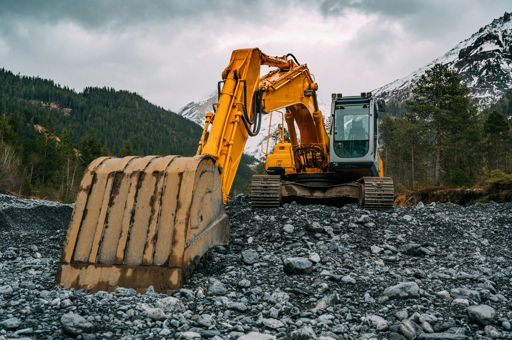
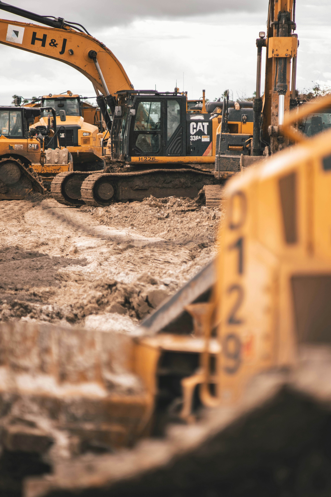
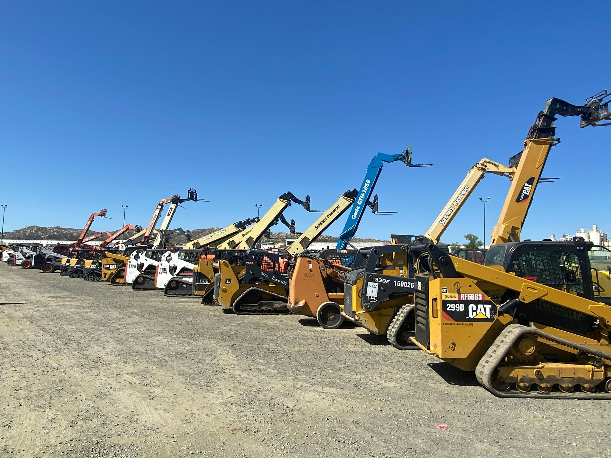
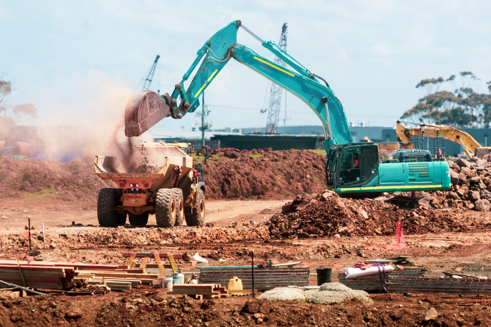
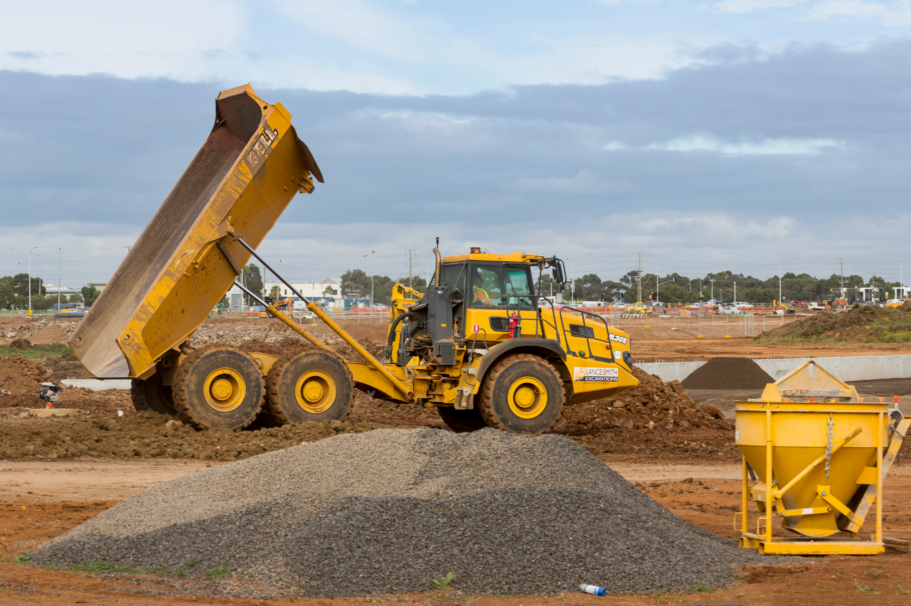
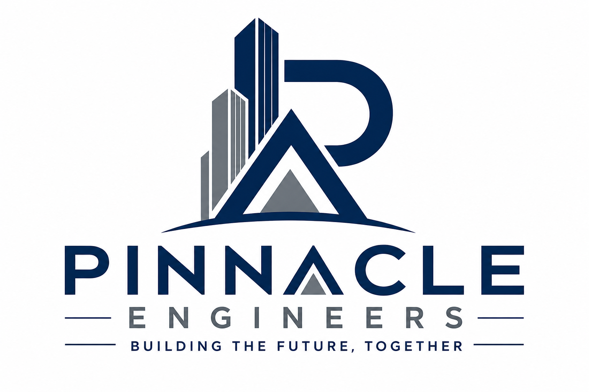

Our Projects












Pinnacle Engineers is a dynamic and forward-thinking engineering and construction company dedicated to delivering high-quality, innovative, and sustainable infrastructure solutions. Established with a vision to redefine engineering excellence, the company has consistently demonstrated its ability to execute complex projects with precision, efficiency, and professionalism.
Our organization is built on a strong foundation of technical expertise, industry knowledge, and a commitment to best practices. We provide a wide range of engineering services, including civil engineering works, structural design, construction management, and infrastructure development. Through the integration of modern technology and skilled manpower, Pinnacle Engineers ensures that every project is completed to the highest standards of quality and safety.
At Pinnacle Engineers, we understand the importance of reliability and timely project delivery. Our team of qualified engineers, project managers, and technical specialists work collaboratively to meet client expectations while adhering strictly to regulatory and safety requirements. We are committed to building lasting relationships with our clients by delivering value-driven solutions tailored to their specific needs.
Our mission is to provide efficient, cost-effective, and sustainable engineering solutions that meet global standards while prioritizing safety, quality, and customer satisfaction. We aim to continuously improve our processes and services through innovation, training, and the adoption of modern engineering practices.
Our vision is to become a leading and globally recognized engineering company known for excellence, integrity, and innovation in the delivery of world-class infrastructure and construction projects.
Pinnacle Engineers offers a comprehensive range of services designed to meet the diverse needs of our clients. These include:
Safety is at the core of everything we do. Pinnacle Engineers is committed to maintaining a safe and healthy working environment for all employees, contractors, and stakeholders. We implement strict Health, Safety, and Environment (HSE) policies to prevent accidents, reduce risks, and ensure compliance with all relevant regulations. Our proactive approach to safety ensures that projects are executed without compromising the well-being of people or the environment.
Quality is a fundamental principle that guides all our operations. We adopt industry best practices and quality assurance procedures to ensure that every project meets or exceeds client expectations. From planning and design to execution and completion, our focus remains on delivering durable and reliable engineering solutions.
Pinnacle Engineers remains dedicated to delivering excellence in engineering and construction. Through innovation, professionalism, and a strong commitment to safety and quality, we continue to build infrastructure that supports growth, development, and sustainability.




